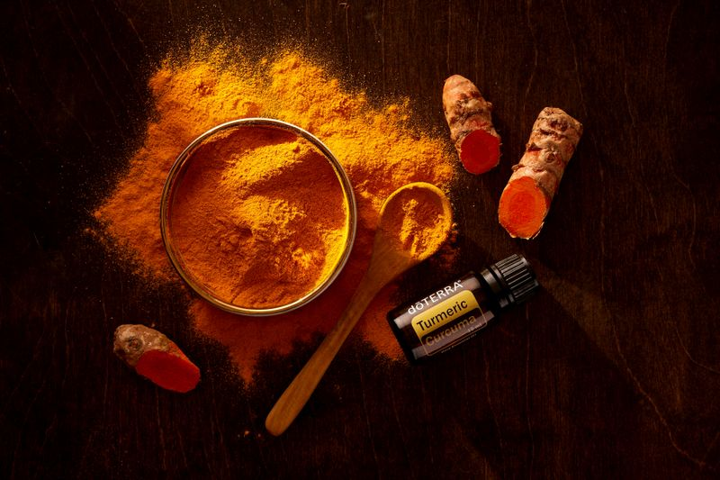

Poudre de corossol



Notre Poudre de Corossol est faite à partir de feuilles soigneusement sélectionnées et séchées au soleil de l'arbre à corossol (Annona muricata), un arbre fruitier tropical originaire des Caraïbes et d'Amérique centrale. Les feuilles sont récoltées à maturité optimale par des agriculteurs locaux de nos régions partenaires au Togo et au Sénégal, puis séchées doucement en utilisant des méthodes traditionnelles pour préserver les composés aromatiques, les vitamines et les minéraux essentiels. Cette poudre fine capture toute la richesse nutritionnelle de cette plante remarquable.
Pouvoir Nutritif & Bienfaits pour la Santé
La poudre de corossol est riche en nutriments, contenant des vitamines A, C, E, du fer, du calcium, du magnésium et du potassium. Elle contient des phytochimiques puissants comme les acétogénines et les polyphénols qui soutiennent le système immunitaire et protègent les cellules du stress oxydatif. Elle soutient la santé digestive, favorise la relaxation et le calme, et aide les processus naturels de détoxification du corps.
Comment Préparer
Mélangez une cuillère à café de poudre de corossol dans de l'eau chaude, du thé ou du jus jusqu'à dissolution complète. Commencez avec une petite quantité et augmentez selon vos préférences. Peut aussi être ajoutée aux smoothies, à l'avoine ou à d'autres recettes. Prenez une à deux fois par jour.
Ingrédients
100% de poudre pure de feuilles de corossol (Annona muricata) — Aucun additif, aucun conservateur, aucune saveur artificielle, aucun remplissage.